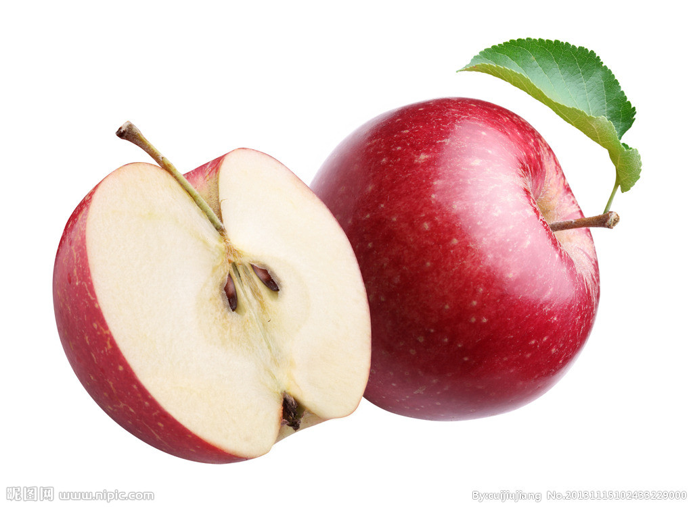

苹果
苹果（学名：Malus pumila）是蔷薇科苹果亚科苹果属植物，其树为落叶乔木。苹果的果实富含矿物质和维生素，是人们最常食用的水果之一。
苹果是一种低热量食物，每100克只产生60千卡热量。苹果中营养成份可溶性大，易被人体吸收，故有“活水”之称，其有利于溶解硫元素，使皮肤润滑柔嫩[1] 。据说“每天一苹果，医生远离我”。
根据联合国粮农组织统计，2013年全世界的苹果产量为8082万吨，超过葡萄的7718万吨，排世界第二位（第一位是香蕉：1.067亿吨）[2] 。毫无疑问，苹果是温带水果之王[2] 。
苹果营养丰富，相当于补品。
苹果品种数以千计，分为酒用品种、烹调品种、尾食品种3大类。3类品种的大小、颜色、香味、光滑度 （可能还有脆性、风味）等特点均有差别。不少品种含糖较高，中等酸度，丹宁含量很低。苹果除生食外，烹食方法也很多，常用作点心馅，苹果馅烤饼可能是最早的美国式甜食。炸苹果常与香肠、猪排等菜肴同食，尤其在欧洲特别普遍。最新的分类学证据显示苹果"家族"（属）的成员也不过38多种，要查出一个“族谱”似乎也并非难事，但是每个种似乎都跟我们今天吃到的苹果有共同之处，并且每个种都可以提供一些水果，虽然有些味道着实不怎么样。从这个角度看，苹果属的每个种都有可能为超市中苹果的甘甜贡献了一分力量。大概在2000年前，世界各地的果园都有。
